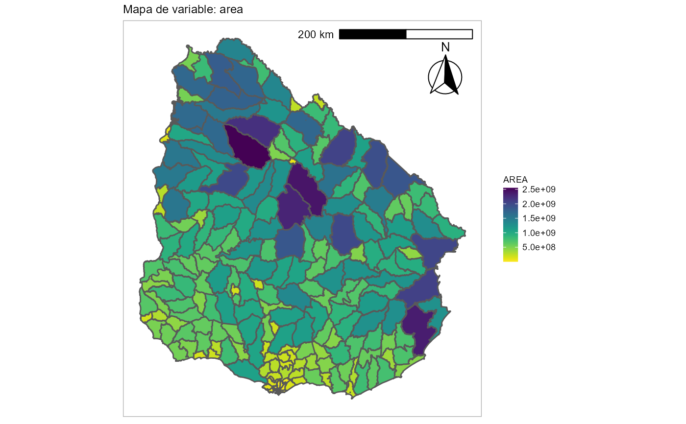

This function allows you to set ggplot2 theme in our suggested format.
plot_geouy(x, col, viri_opt = "plasma", l = NULL, other_lab = NULL, ...)An sf object like load_geouy() results
Variable of "x" to plot (character)
A character string indicating the colormap option to use. Four options are available: "magma" (or "A"), "inferno" (or "B"), "plasma" (or "C"), "viridis" (or "D", the default option) and "cividis" (or "E")
If NULL none label added, if "%" porcentage with 1 decimal labels, if "n" the value is the label, if "c" put other variable in other_lab. Default NULL
If l is "c" put here the variable name for the labels.
All parameters allowed from ggplot2 themes.
ggplot object of a choropleth map with x geometries and col values.
# \donttest{
secc <- load_geouy("Secciones")
#> Reading layer `Secciones' from data source
#> `https://mapas.mides.gub.uy:443/geoserver/ows?service=WFS&version=1.0.0&request=GetFeature&typeName=INECenso:Secciones'
#> using driver `GML'
#> Simple feature collection with 232 features and 8 fields
#> Geometry type: MULTIPOLYGON
#> Dimension: XY
#> Bounding box: xmin: 366582.2 ymin: 6127919 xmax: 858252.1 ymax: 6671738
#> Projected CRS: WGS 84 / UTM zone 21S
plot_geouy(x = secc, col = "AREA")

# }